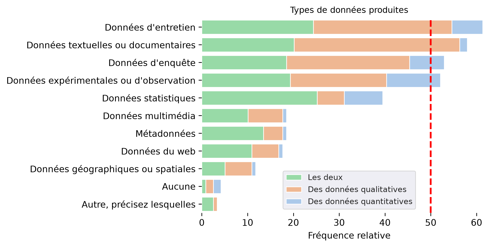
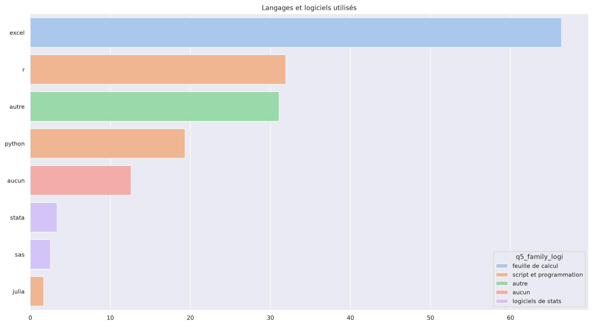
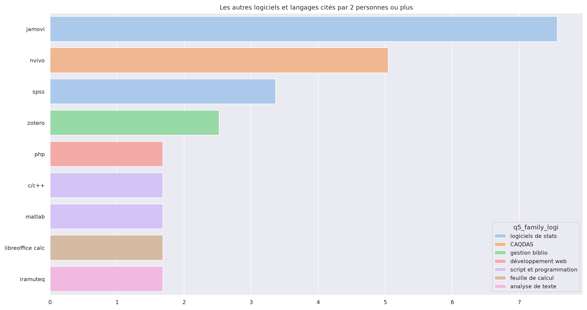
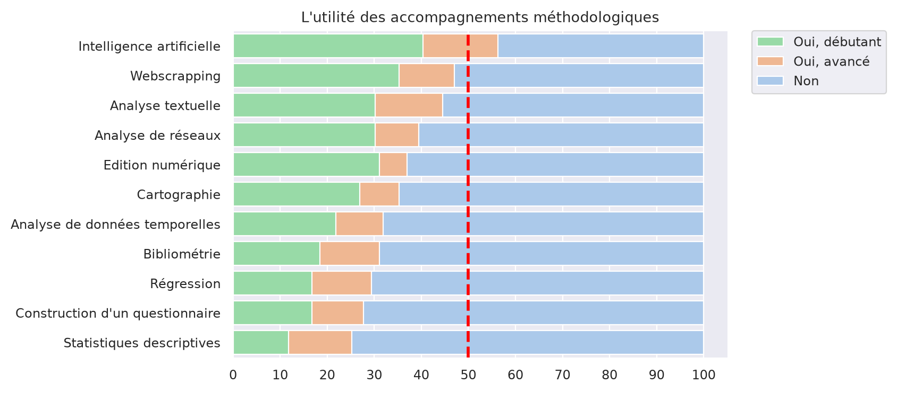
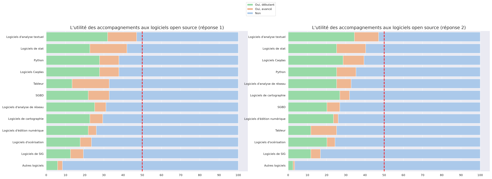
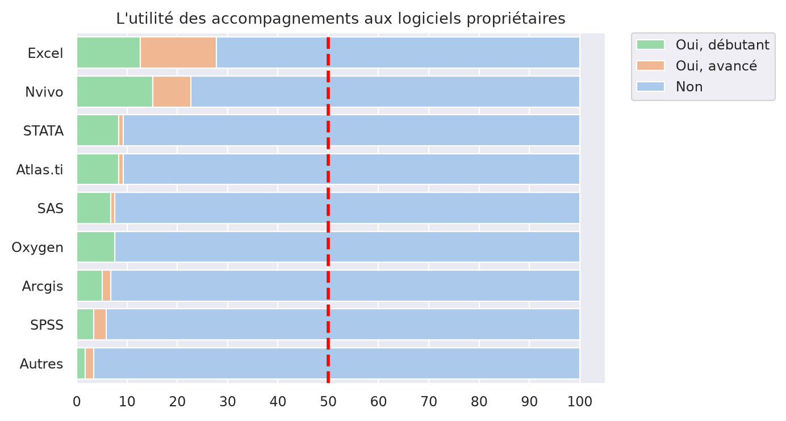
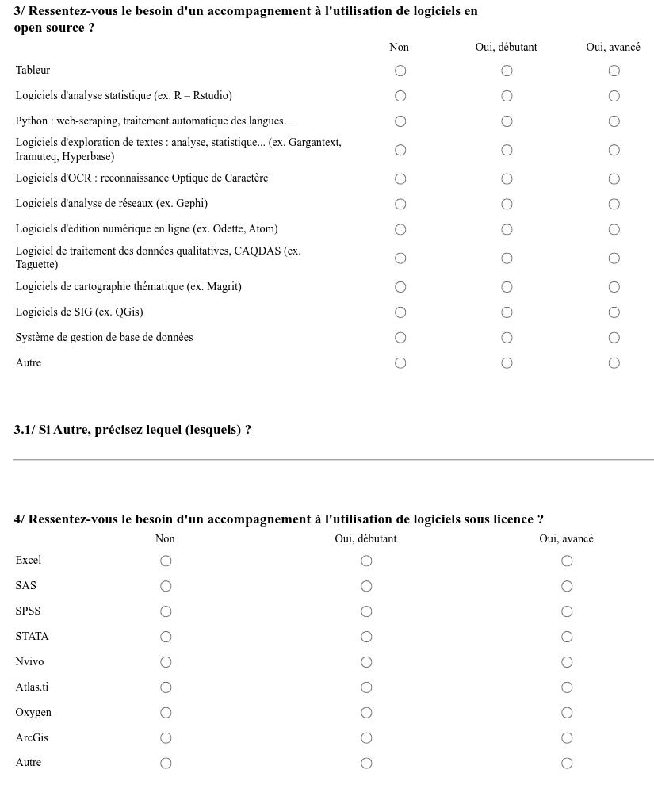
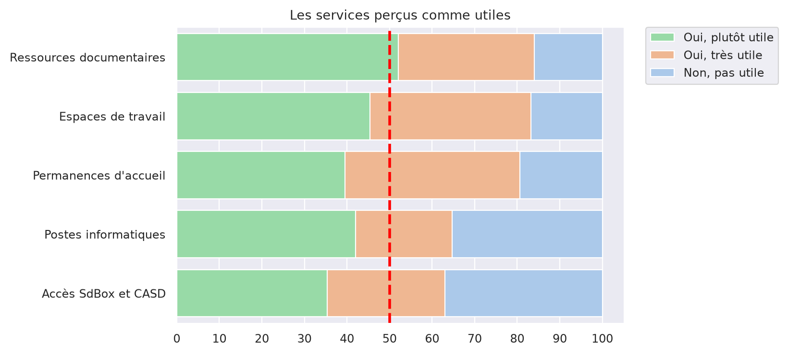

Production et analyse des données#
Types de données produites#
Les personnes interrogées travaillant exclusivement avec des données dites “quantitatives” sont 16% (Table 14). Elles sont 48% à s’appuyer essentiellement sur des données qualitatives et 36% à manipuler les deux types de données.
nb |
freq |
|
|---|---|---|
Des données qualitatives |
57 |
47,9 |
Des données quantitatives |
19 |
16,0 |
Les deux |
43 |
36,1 |
Total |
119 |
100,0 |
Les quatre types de données les plus fréquemment produites (Fig. 8) sont les entretiens (61%), les données textuelles ou documentaires (58%), les données d’enquête (53%) et les données expérimentales ou d’observation (52%). On notera toutefois le caractère ambigü de certaines catégories. Ainsi la notion d‘“enquête” est largement utilisée en sciences sociales pour désigner la partie empirique des recherches et peut renvoyer aussi bien aux méthodes d’enquête ethnographique qu’aux méthodes d’enquête par questionnaire. De même, les données d’observation peuvent se comprendre au sens de l’anthropologue qui observe les interactions au sein d’un groupe humain ou de l’ornithologue qui compte les espèces d’oiseau. Parmi les “autres types de données”, une personne a d’ailleurs précisé qu’il s’agissait d “observations in situ non expérimentales”. Tandis qu’une autre ne se reconnait pas dans la notion de “données”.

Fig. 8 Les types de données traitées#
Outils de traitement#
Le graphique (Fig. 9) donne à voir les réponses à la question “Quels langages de programmation ou logiciels de traitement de données utilisez-vous ?”. 66% des personnes interrogées utilisent Excel. On retrouve ensuite les langages R (32% des répondants) et Python (19%). Les logiciels de statistique Stata (3%) et SAS (3%), ainsi que le langage Julia (2%) sont plus confidentiels. On remarque par ailleurs que 31% des répondants ont recourt à d’autres outils que ceux proposés dans la question.

Fig. 9 Quels langages de programmation/logiciels de traitement de données utilisez-vous ?#
Ces répondants ont complété leur réponse en donnant le nom de ces autres langages et logiciels. En tout, 26 outils ont été cités. Nous les avons regroupé en sept “familles”:
les “logiciels de statistiques” comme SPSS, Jamovi, Stata ;
les langages de “scripts et de programmations” comme Matlab ou C++. Probablement qu’une subdivision de cette catégorie serait justifiée afin de distinguer les langages généralement employés pour l’analyse de données (R, Julia, Matlab, Python) et les langages de programmation comme C++ ;
les outils de gestion de bibliographie (Zotero, Endnote) ;
les logiciels de “tableurs” et les feuilles de calculs : Excel, Libre Calc ;
les langages liés au développement web (css, html, php, javascript) ;
les outils d’analyse textuelle (Iramuteq, ActiveTigger) ;
les “CAQDAS” (Computer-Assisted Qualitative Data Analysis Software) comme Nvivo, Qualcoder, Atlas.ti
Sur le graphique ci-dessous Fig. 10, nous n’avons affiché que les programmes cités par deux personnes au moins. Jamovi (8%) est le plus utilisé. Il s’agit d’un logiciel d’analyse statistique open source à la différence de SPSS qui est propriétaire. SPSS est cité par 3% des répondants. comme Nvivo (N=6) pour les logiciels CAQDAS.
On note enfin que 13% des personnes interrogées disent n’utiliser aucun outil informatique pour traiter les données.

Fig. 10 Logiciels cités par deux répondants ou plus.#
Développement et dépôt de codes ou de logiciels#
Parallèlement à l’utilisation d’outils informatiques pour le traitement des données, 27% des répondants ont déjà été amenés à développer ou faire développer du code ou des logiciels dans le cadre de leurs recherches.
N’utilise pas de langage de programmation |
Utilise des langages de programmation |
Total |
|
|---|---|---|---|
Ne développe pas de code |
61 (51,26%) |
26 (21,85%) |
87 (73,11%) |
Développe du code |
7 (5,88%) |
25 (21,01%) |
32 (26,89%) |
Total |
68 (57,41%) |
51 (42,86% |
119 (100%) |
Sur les 32 personnes ayant répondu “Oui” à la question “êtes-vous amené.e à développer ou faire développer des logiciels/du code spécialisé(s) ?”, 31 ont donné des indications sur ce qu’elles développent ou font développer (Table 16). Après une analyse manuelle des réponses, nous en avons classé 15 (soit 48% des 31 réponses) dans la catégorie “traitement et analyse de données”. Sept exemples (23% des 31 réponses) concernent la collecte de données d’expérience via, par exemple, le logiciel Psytoolkit. Tandis que 8 répondants (26% des 31 réponses) parlent de logiciels variés, d’algorithmes, de plateformes sans préciser la finalité du code.
Type de développement |
nb |
total |
freq |
|---|---|---|---|
traitement et analyse de données |
15 |
31 |
48,4 |
programmes et logiciels variés |
8 |
31 |
25,8 |
collecte de données |
7 |
31 |
22,6 |
diffusion |
2 |
31 |
6,5 |
Il est intéressant de noter que le recours à un langage de programmation ne suffit pas pour se considérer comme “développeur”. En effet, le tableau croisé Table 15 montre que 26 des 51 répondants manipulant des langages de programmation ou des scripts (R, Python, C++) disent ne pas développer de code. Cette proportion est plus forte chez les utilisateurs de “R” que de Python. 63% des premiers ne développent pas de code contre 30% pour les seconds (Table 17).
Total |
N’utilise pas R |
Utilise R |
N’utilise pas Python |
Utilise Python |
|
|---|---|---|---|---|---|
Ne développe pas de code |
73,11 |
77,78 |
63,16 |
83,33 |
30,43 |
Développe du code |
26,89 |
22,22 |
36,84 |
16,67 |
69,57 |
Total |
100,00 |
100,00 |
100,00 |
100,00 |
100,00 |
En tout, 30 personnes — soit 25% des 119 participants à l’enquête et 94% des répondants développant du code — ouvrent leurs codes et logiciels quelque soit le mode d’ouverture choisi. Cette proportion est de 34% chez les utilisateurs de R contre 70% pour Python Table 18. Des chiffres similaires à ceux observés dans le tableau Table 17. Nous pouvons alors faire l’hypothèse que l’écart observé entre le recours aux langages informatiques et le développement de code est lié au fait pour les chercheurs de se sentir légitimes à ouvrir leurs scripts.
Total |
N’utilise pas R |
Utilise R |
N’utilise pas Python |
Utilise Python |
|
|---|---|---|---|---|---|
Ne développe pas de code |
74,79 |
79,01 |
65,79 |
85,42 |
30,43 |
Développe du code |
25,21 |
20,99 |
34,21 |
14,58 |
69,57 |
Total |
100,00 |
100,00 |
100,00 |
100,00 |
100,00 |
Si nous regardons maintenant comment les 30 répondants ouvrent leurs codes, on note que 77% d’entre eux (19% des personnes interrogées) ont déjà fait des dépôts sur Github et 40% (10% des personnes interrogées) sur des instances Gitlab. Ils sont par ailleurs 5% à utiliser d’autres solutions, en complément ou non des deux premières. Ces solutions sont :
Le dépôt Statistical Software Components (SSC) des commandes Stata;
Les dépôts personnels;
HAL;
Ortolang et Huma-Num ;
L’Institut national pour la propriété intellectuelle
q7_software_depot |
Effectifs |
Total |
Fréquences relatives (%) |
|
|---|---|---|---|---|
0 |
Non |
89 |
119 |
74,79 |
1 |
Oui, sur GitHub |
23 |
119 |
19,33 |
2 |
Oui, sur GitLab |
12 |
119 |
10,08 |
3 |
Oui, autre, précisez |
6 |
119 |
5,04 |
4 |
Oui, sur Software Heritage |
1 |
119 |
0,84 |
Accompagnements et formations méthodologiques#
Méthodes#
L’intelligence artificielle est la thématique pour laquelle un accompagnement est le plus demandé : 40% des répondants en ressentent le besoin à un niveau débutant et 16% à un niveau avancé. L’accompagnement à l’utilisation d’outils de webscrapping vient ensuite avec 47% des répondants qui le considèrent comme utile (35% à un niveau débutant et 12% à niveau avancé). Concernant, les méthodes spécifiques comme l’analyse textuelle et l’analyse de réseau, nous observons un taux identiques de personnes interrogées souhaitant un accompagnement à un niveau débutant. En revanche, la demande pour un accompagnement à l’analyse textuelle à un niveau avancé est un peu plus élevée (14%) que pour l’analyse de réseau.
En bas du tableau nous retrouvons le thème des statistiques descriptives avec 25% des répondants qui jugent utile un accompagnement sur ce sujet.

Fig. 11 Ressentez-vous le besoin d’un accompagnement méthodologique#
Outils#
q16_ter["cum_sum"] =q16_ter["cum_sum"]*100
Les questions concernant les besoins d’accompagnement à différents types de logiciels open source a été posé deux fois :
question 7, partie “Gestion et traitement des données”
la question 3 de la partie “Analyse des données”.
La comparaison des tris à plat montre que certaines personnes ont répondu différemment. La différence reste néanmoins marginale. Par exemple, la première fois que la question a été posée, 39 personnes ressentaient le besoin d’être accompagné pour utiliser un tableur contre 30 la seconde fois que la question a été posée (Table 20).
Tableur |
Réponse 1 |
Réponse 2 |
|---|---|---|
Non |
80 |
89 |
Oui, avancé |
23 |
16 |
Oui, débutant |
16 |
14 |
Total |
119 |
119 |
Dans l’ensemble, entre 50 et 80% des répondants ne ressentent pas le besoin d’un accompagnement méthodologique pour les différents logiciels cités (Fig. 12). Les quatre premier types de logiciel demandés sont :
les logiciels d’analyse textuelle. 48% des répondants disent ressentir le besoin d’un accompagnement (35% à un niveau débutant et 13% à un niveau avancé). À noter que les logiciels cités renvoient à des approches et des méthodes d’analyse différentes.
les logiciel d’analyse statistique (40%)
les logiciels d’analyse de données qualitatives, appelés aussi CAQDAS, comme Qualcoder (environ 37%)
le langage python (environ 35%)
Ensuite, on observe des besoins d’accompagnement pour les logiciels liés à gestion de bases de données (32%), à l’analyse de réseaux (31%) et la cartographie (29%).

Fig. 12 Besoin d’accompagnement aux outils open source#
Dans le cas des besoins en accompagnement à la prise en main de logiciels propriétaires, 5 “familles” de logiciels étaient proposées :
Les tableurs représentés par Excel
les logiciels de traitements statistiques comme SPSS, Stata, SAS
les logiciels de traitement des données textuelles avec Atlas.ti
les systèmes d’information géographique via ArcGis
les logiciels d’analyse des données qualitative (CAQDAS, Nvivo)

Fig. 13 Besoin d’accompagnement aux outils propriétaires#
Excel est l’outil qui obtient le taux le plus élevé : environ 27% des personnes interrogées ressentent le besoin d’être accompagnées. On retrouve une proportion relativement similaire à celles des outils de tableur en open source (25%). En ce qui conerne Nvivo, 23% des répondants sont intéressés par un accompagnement à ce logiciel de la famille des CAQDAS. Cette proportion est inférieure de 14 points à celles des répondants ressentant un besoin d’accompagnement pour les logiciels open source de la même famille.
Il est toutefois difficile d’interpréter cet écart dans la mesure où les question n’ont pas été rédigées de la même manière (Fig. 14). La question qui porte sur les logiciels open source est formulée de façon plus générale. Le plus souvent, on parle d’abord de méthodes avant de citer des noms de logiciels. Par exemple, il est écrit “ressentez-vous le besoin d’un accompagnement aux logiciels d’analyse de réseaux (ex. Gephi) ?” Il est possible alors que le besoin ressenti porte autant sur la méthode, c’est-à-dire l’analyse de réseau, que l’outil, qui est ici Gephi. À l’inverse, dans le cas de la question sur les logiciels propriétaires, les noms d’outils sont directement cités sans référence à une méthode particulière.
Il est possible aussi que cet écart soit lié à une fatigue des participants. Ils répondrait alors “non” par facilité, cette case étant cochée par défaut. Néanmoins, nous ne pouvous pas totalement exclure l’hypothèse que les personnes interrogées aient une appétence plus grande pour les logiciels open source que propriétaires. Il nous semble alors intéressant de comparer ces résultats avec ceux du sondage de la DSIN sur le type de suite bureautique (microsoft, google, outils libres) péblicitée par le personnel de l’université.

Fig. 14 Extrait du questionnaire : l’accompagnement aux logiciels open source et propriétaires#
Enfin, une dizaine de répondants ont fait des suggestions d’outils open source ou propriétaires concernant lesquels ils aimeraient être formés. Ces outils s’inscrivent dans les différentes catégories proposées comme “tropy” (analyses de données qualitatives), jamovi (analyse statistique), les bases de données “orientées graphe” (système de gestion de base de données) ou des outils de traitement du son, des textes ou des images.
Autres logiciels open source |
Autres logiciels propriétaires |
|---|---|
logiciel d’analyse des gestes, de l’intonation etc. |
Qualtrics, Jamovi |
wikidata |
Photoshop |
Logiciel de reconnaissance de texte manuscrits type Transkribus |
Jamovi |
modèle linéaire mixte (LMM) |
|
Bases de données en graphe éventuellement |
|
Logiciel de traitement d’entretiens et de vidéos |
|
Anaconda (python), Tropes… |
|
Tropy |
Services à développer#
L’enquête proposait une liste de services en demandant aux participants s’ils considéraient comme utile de les développer. 83% des répondants trouvent ainsi qu’il serait utile de développer les ressources documentaires. Deux d’entre eux écrivent :
“Quand je parle de documentation, je parle d’ouvrages pour la recherche. La bibliothèque est très loin d’être au niveau sur cet aspect, même si elle a un bon fond pour la formation.”
“Il est certain que les ressources documentaires de la bibliothèque sont très pauvres en ce qui concerne la recherche et ne peuvent être utilisées, à mon sens, par des chercheurs d’aujourd’hui.”
On observe des taux équivalents de participants intéressés par le dévloppement d’espaces de travail (83%) ou d’une permanence (81%). Là aussi, un des répondants precise le type de service qui devrait être mis en place :
Apprendre à coder avec l’IA sans devenir soi-même développeur : donc un accès personnalisé à des développeurs (notamment en Python), comme une permanence d’accueil à créneaux fixes.
Le service ayant le moins de succès concerne l’accès à une SD-Box et au CASD (Centre d’accès sécurisé aux données). 63% des répondants le jugent tout de même utile.

Fig. 15 Les services à développer#
Pour compléter une question ouverte permettait aux participants de suggérer le développement d’autres services. Quinze personnes y ont répondu. Les propositions portent sur :
l’accès à des bureaux nominatifs et équipés informatiquement
des accès wifi pour les stagiaires et les nouveaux collègues dans “un délai raisonnable”
le développement de services liés à la sécurité des données (accès à un serveur chiffré et des lieux de stockages sécurisés)
des formations sur l’éthique de la recherche.